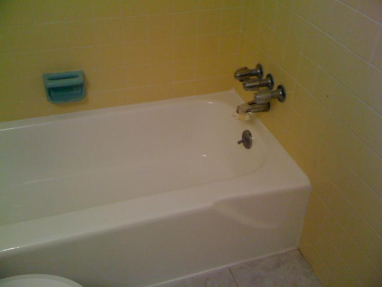
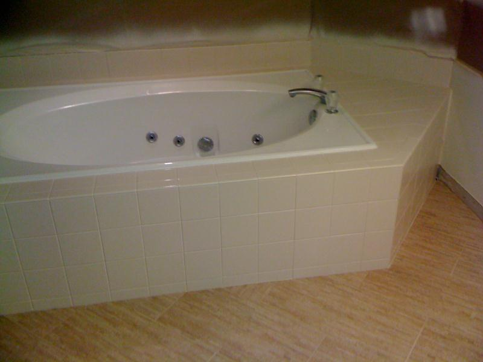
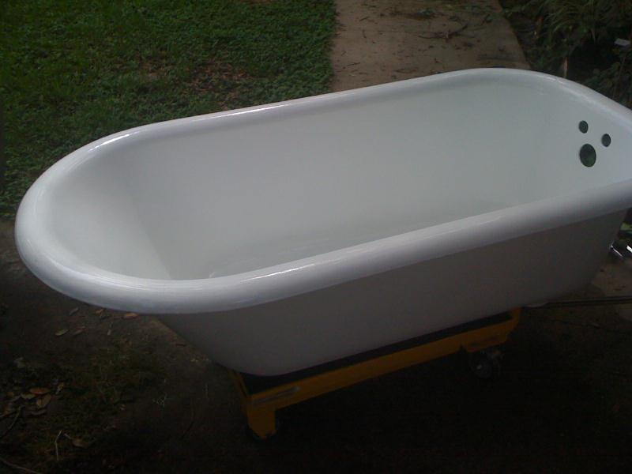

Keep the tub. Love the finish.
A fresh start for
your bathroom.
Bathtub, tile, shower stall and sink refinishing in Greater Milwaukee. Give the surfaces you already have a new lease on life.
Call for a free estimate ↗Email your project photos →
5-year residential warranty.
2-year commercial warranty. Care sheet included.
Almost all work: one dayProject timing confirmed at estimate
Residential + commercialBathtubs, tile, showers & sinks
Free estimatesSend photos or call to discuss
A closer look at AKL's work
Good surfaces deserve
another chapter.



Bathtubs ↗
Porcelain, fiberglass, whirlpool & clawfoot.
Ceramic tile ↗
Tile and surrounds.
Shower stalls ↗
Refresh your existing shower.
Sinks ↗
Another life for a familiar fixture.
From an AKL customer
“He was always prompt, professional and delivered the highest quality product.”
Tell us what needs
a fresh finish.
Call or email photos for a free estimate. Serving Milwaukee and surrounding communities.
Office hours: Monday–Saturday, 8:00 AM–6:00 PM.
Allow 24 or 48 hours before use, depending on the coating.
A first look at a refreshed AKL website.
See AKL's full service area ↗